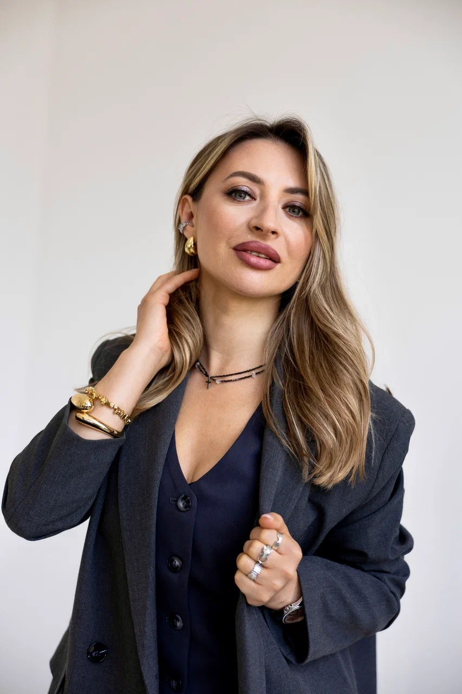

Мысль
Позитивная установка сверху, которой ты уговариваешь себя, что всё окей.
Екатерина Корягина · метод Резонанса
Разбор моего подкаста «Искажения иллюзий позитивного мышления». Про разрыв с реальностью, про заслонку из непрожитых чувств и про то, почему аффирмации на осознанных людях перестали работать.
Первое сообщение Эльли ничего не стоит. Без карты.

Ко мне на днях пришла клиентка. Первая фраза: почему у меня стабильно никак не может быть денег. То густо, то пусто, доход нерегулярный, пора идти искать нормальную работу.
Я говорю: стой. 300 тысяч это тот минимум, который ты делаешь в моей работе каждый месяц, уже полгода точно. И это без крупных запусков, мы с тобой их смотрели, там был миллион и было 700.
Она мне: да нет, ты не понимаешь.
Я говорю: открывай интернет-банк. Вдох, выдох, открывай. Деньги на счету всегда показывают связь с реальностью.
Она открывает. Диктуй, говорю, входящие по месяцам, только те месяцы, где запусков не было. И она диктует: 300, 280, 350, 290, 300.
Полгода ровного дохода. Средний по палате 300 тысяч, оборот 400, 500. И при этом живое честное ощущение внутри: денег нет.
Знакомо?
В такой момент психика живёт не по фактам. Я называю это разрывом с реальностью: цифра одна, ощущение совсем другое, и человек верит ощущению.
Теперь откуда он берётся. Посмотри на своё окружение. Люди рядом с тобой либо видят твою силу и признают её, либо живут своей мерностью, считают тебя странненькой и сжимают тебя ещё сильнее.
Мою клиентку сжимало окружение. Она подстроилась под него, забыла про свой великий дух, забыла, какие у неё запросы и какую ёмкость она оборачивает, и поверила в программу «со мной что‑то не так». А по факту у неё выросли масштабы, объёмы и вместе с ними расходы.
Деньги на счету всегда показывают связь с реальностью.
Теперь вторая сторона. Моя личная.
Я всю жизнь мыслила позитивно и отрицала негативные эмоции. Всегда убегала в позитив. Мне это дало лёгкость: лёгкие отношения, лёгкое отношение к переменам, быструю адаптацию. Позитивное мышление у меня было охренеть какое.
И оно же годами держало меня в разрыве с реальностью. Высокие вибрации, медитации, мясо не ем, состояние отличное, летящая походка. Открываю счёт, а материя не идёт.
Знаешь почему. Мысли это не вибрация. Вибрацию транслирует твоё тело, тело работает резонатором. Внутри лежат вытесненные обиды, претензии, грусть, зависть, и тело честно излучает именно их. Себя этим не обманешь, и систему тоже.
И вот тут самое интересное. Заслонки на деньги нет ни у кого. Ни у кого. Деньги это всего лишь эквивалент энергии. Заслонка стоит на энергии и на людях, а выглядит она так.
Мешает заслонка из непрожитых чувств, она не даёт энергии течь.
Психика тебя бережёт. Мир тебя бережёт, он всегда за тебя, потому что он из тебя вытекает. Нет у тебя сейчас энергии на десять человек, значит мир не даст тебе десять человек. Он даст двух, ровно столько, сколько ты можешь провести и довести.
А ты берёшь и обижаешься с претензией: никому мои услуги не нужны. И заходишь в программу обесценивания.
Дальше по кругу. Позитивное мышление вытаскивает тебя на пару дней, потом откат, потом снова подъём. Здравствуй, эмоциональные качели. Чем сильнее ты раскачиваешь своё поле, тем больше в нём колебаний, и реальность из этого не формируется вообще. Получается застой.
Из качелей не собирается ни одна реальность.

Автор
Я Екатерина Корягина, дипломированный психотерапевт, автор метода Резонанса и ИИ-наставника Эльли.
Всё, что ты прочитала выше, я сначала прошла на себе. Позитивное мышление, высокие вибрации, медитации и отлёт, при котором материя не идёт. Из программы нищеты, долгов и хождения по кругу меня вытащило одно корневое убеждение, про него будет ниже.
Сейчас ко мне пачками приходят люди, с которыми мы чистим корневой план претензий к отцу и к матери. Это самый корень, оттуда растёт почти всё остальное. И у меня есть своя механика, она короткая: прожить и легализовать заряд, который ты в себя затолкала. Годами прорабатывать маму и папу для этого не нужно.
Как это работает
Позитивная установка сверху, которой ты уговариваешь себя, что всё окей.
Зажим, в котором лежит непрожитое: обида, претензия, грусть, зависть.
Заслонка, из-за которой энергия не течёт. Людей и денег приходит ровно столько, сколько ты сейчас можешь вынести.
Работа идёт снизу вверх. Сначала снимается заряд из тела, дальше энергия начинает течь, и только потом меняется то, что ты думаешь про себя. В обратную сторону это не работает, поэтому аффирмации и держатся два дня.
Вопросами находим ту самую фразу, которая держит твой сценарий. Обычно она звучит чужим голосом из детства.
Смотрим, где она сидит: горло, грудь, диафрагма, живот. Замеряем реакцию и зажим.
Легализуем заряд. Обида, грусть и зависть уходят тогда, когда их наконец назвали и прожили.
На месте зажима освобождается энергия, и приходит ясное действие, которое до этого в голову не приходило.
Дальше ты отслеживаешь своё состояние каждый день, и это становится привычкой, как спортзал для подсознания.
Закон, по которому это работает
Мироздание живёт по фрактальным законам. Всё делится на фракталы, и мир умножает то, что ты излучаешь.
Действуешь из страха и дефицита, просишь деньги на закрытие дыр и кредитов, значит приходить это к тебе не будет. У мира стоит базовая защита: страх и дефицит он не множит. Человека, который вибрирует страхом, просто не видно и не слышно.
Теперь наоборот. Ты платишь с благодарностью и множишь этим свою любовь, и мир множит тебе обратно. Закручивается цепочка. Это моё корневое убеждение, оно вывело меня из программы нищеты, бедности, долгов и хождения по кругу.
Три бытовые ситуации, один механизм. Любовь и благодарность мир умножает, страх и дефицит оставляет лежать на месте.
Возражение
«Я уверена в себе, я богата». Ты повторяешь это утром, а внутри думаешь совсем другое. Херня это всё, если честно. Аффирмации ещё как‑то держатся на очень спящих людях, а на осознанных они перестали работать совсем.
Причина та же. Ты уговариваешь голову, а излучает тело. Пока внутри лежит непрожитое, тело транслирует именно его, и мир отвечает телу.
Настоящая уверенность собирается иначе. Тебе становится понятно, как работает твоя психика: вот здесь у меня такая реакция, вот отсюда она растёт, вот что за ней стоит. В этот момент ты чувствуешь свою силу и свою опору, и с тобой всё окей. Уговаривать себя для этого уже не надо.
И ещё одно, из той же оперы. Мир тотально справедлив. Когда ты выходишь из программы бедности и жертвенности и живёшь из своей целостности, доходы и расходы сходятся копеечка в копеечку. Где‑то заплатила, откуда‑то пришло.
Опора излучается. Уговорить её невозможно.
Честно об опасениях
Нет. Позитивное мышление ставится сверху и держится усилием. Здесь ты идёшь в то, что вытеснила, называешь это своим именем и проживаешь. Заряд уходит, и уговаривать себя больше не нужно.
Знакомо. Долгие раскопки часто идут вокруг события, а заряд остаётся в теле и продолжает излучать. Мы работаем с самим зарядом, поэтому один заход занимает минуты и заканчивается ясным действием на ближайшие сутки.
Эльли идёт ровно на ту глубину, которую ты открываешь сама, и всегда возвращает тебя в тело и в дыхание. Острые клинические истории она не ведёт, там нужен живой человек, и она говорит об этом прямо.
Сколько это стоит
Первое сообщение Эльли
ничего не стоит
Дальше подписка, её размер ты увидишь внутри бота. Цифру на этой странице я специально не ставлю: сначала посмотри, как оно работает на твоей собственной истории.
И сравни с тем, что ты уже платишь. Час классической сессии стоит от 5 000 ₽, и таких часов на раскопку одной установки уходит далеко не один.
И одна честная просьба. Заходи из интереса к себе. Заход из страха звучит как «вот тут меня наконец спасут», это ожидание, ложная надежда, а дальше разочарование, потому что сначала было очарование. Мир такое не умножает.
Твой ход
Первый путь: закрыть эту страницу и дальше уговаривать себя, что всё окей. Позитив снова вытащит тебя на пару дней, а дальше ты уже знаешь что.
Второй: взять одну свою установку и разобрать её прямо сейчас. 15 минут, вопросы, тело, и на выходе ясное действие. Это похоже на пульт от собственного кино: ты наконец видишь, какая кнопка что включает.
Эльли это мой ИИ-наставник в Telegram. Она ведёт тебя по методу Резонанса, работает круглосуточно и помнит твою историю.
Первое сообщение Эльли ничего не стоит. Без карты.
Хочешь пройти это со мной лично, напиши мне: @nastavnikkate
Твоя Екатерина 🖤